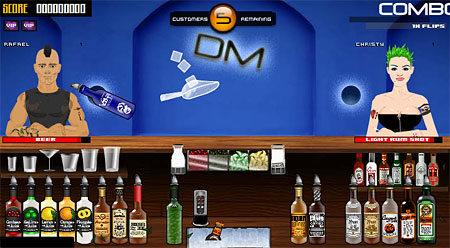

screenshot / Adam Avramescu Giving a new meaning to the phrase, “vodka headache.”
Flash games are one of my favorite ways to kill time, so I think it’s fair to say I know my way around the genre. The problem with Flash games, of course, is that some people are really crappy at designing them so you get a lot of boring, poorly written “click on a certain point on the screen” or “avoid stuff with your mouse” odysseys.
What makes a good Flash game? Graphics help. So does coherence (although there’s a joy to playing some indecipherable Japanese game where you’re, like, balancing a dog on a stick or something). But the real keys to a good game are innovation and in-game physics. The former is important when you realize how many games are essentially “click on things that are one color but avoid things that are another color.” Horribly uninteresting. The latter is why I never play Flash Mario games – they never feel quite right.
So here’s my new Flash addiction: Drunken Masters. It combines service-based games like Diner Dash with just about every physics element you could think of: You’re constantly serving customers drinks, which you have to mix precisely using the liquor, juice, ice, and garnish behind your bar – there’s even four types of glasses – and if you’re far enough off, the customer will reject your concoction and you’ll get points off. Plus customers’ satisfaction levels are constantly dropping unless you perform tricks to appease them.
 “And now, here’s a song by a gay guy.”
“And now, here’s a song by a gay guy.” 


Recent comments